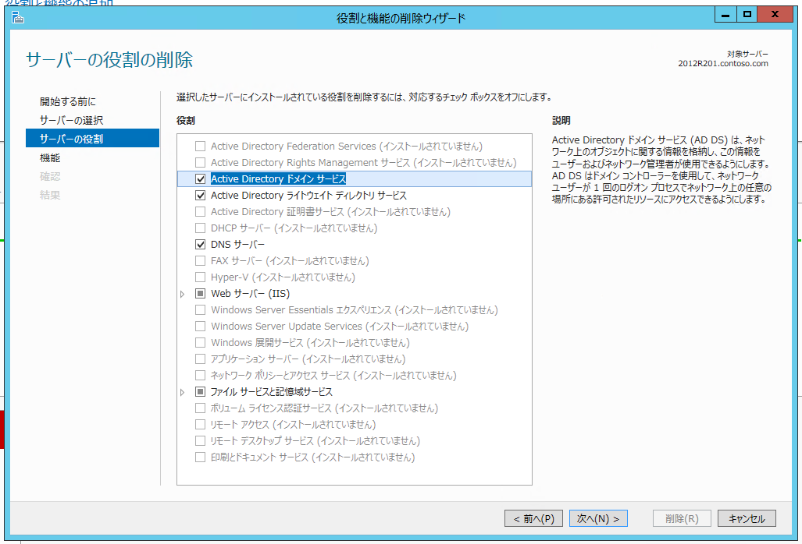
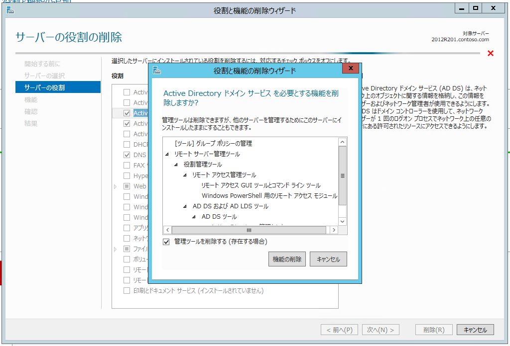
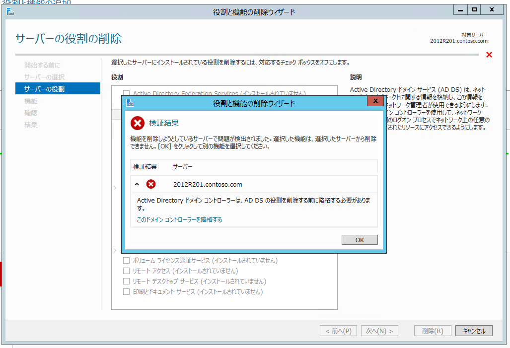
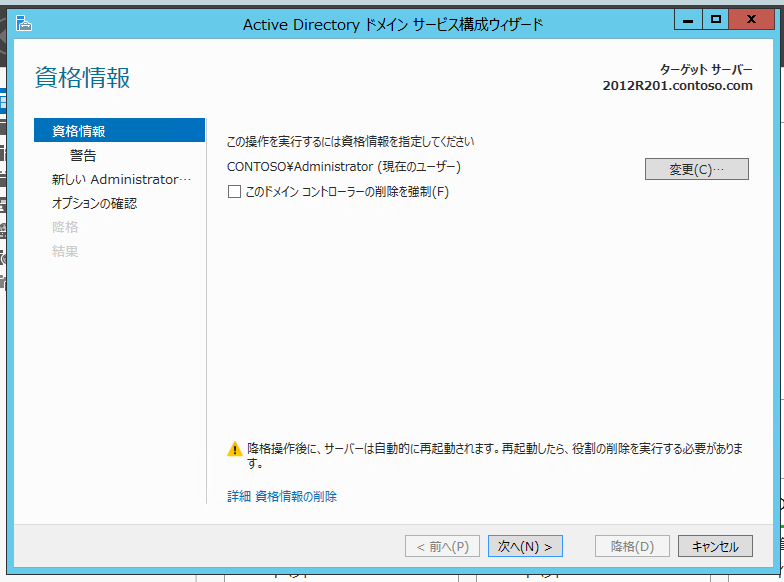
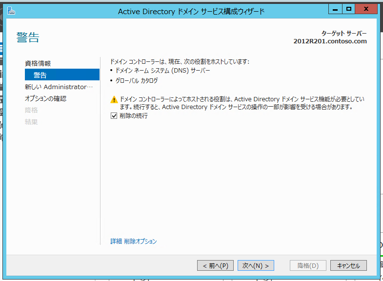
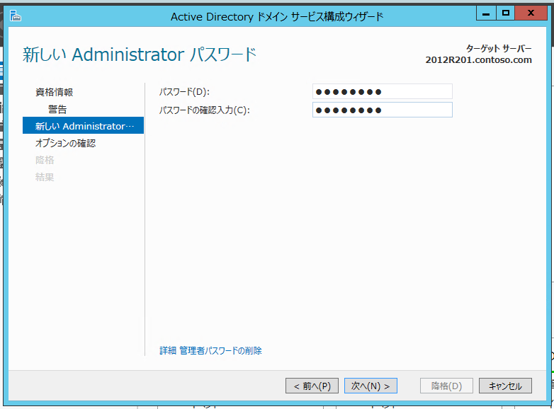
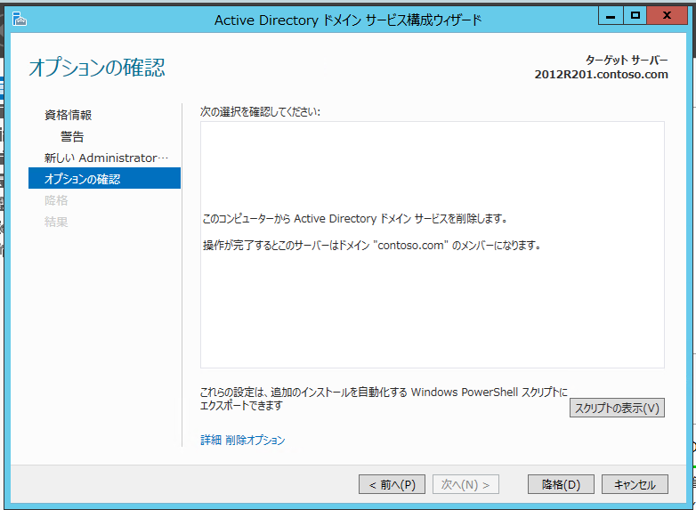
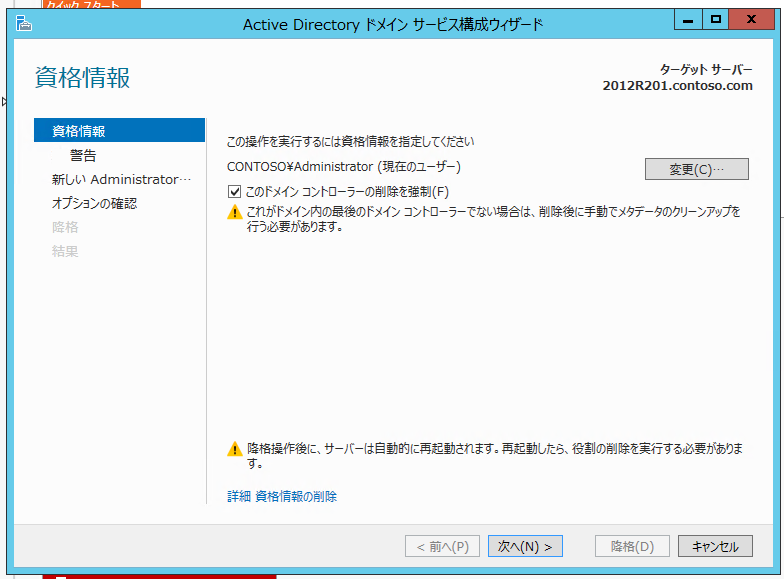
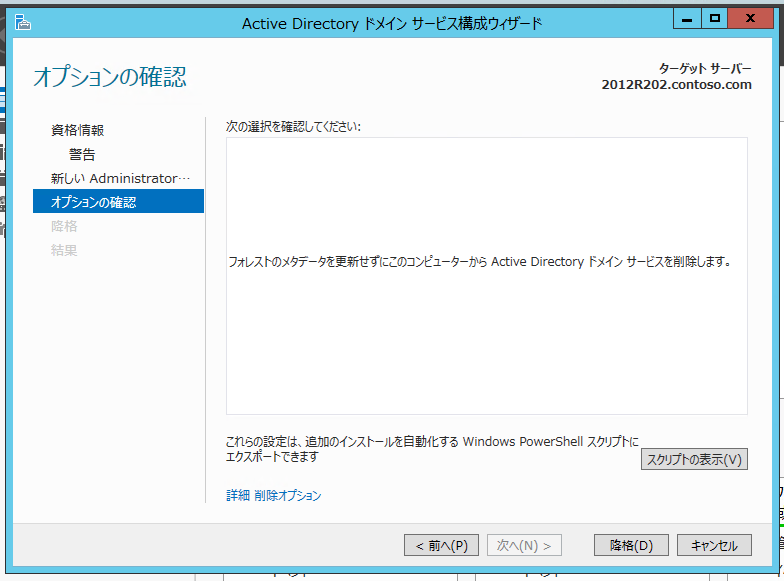

本記事は 2018 年 12 月 7 日に公開された記事を元に本ブログへ移行したものです。元の記事の最新の更新情報については、本内容をご参照ください。
こんにちは。Windows Commercial Support Directory Services チームです。
Windows Server 2012 / 2012 R2 のサポート終了が近付き、ドメイン コントローラーのバージョン アップ対応を検討されているお客様も多くいらっしゃると思います。
本記事では、そのようなバージョン アップ対応において、旧環境を撤去する際に必要となる「ドメイン コントローラーの降格方法」についてご案内します。
通常の降格方法に加え、「強制降格」と呼ばれる通常降格が何らかの理由により行えなかった場合に実施する手順、また、その後に実施する必要のあるメタデータ クリーンアップと呼ばれる手順についてもご案内します。
作業の流れ
以下の順序で降格作業を行います。
B-1 の手順で通常降格に失敗した場合、B-2 以降の手順で強制降格を行います。
A 事前作業
事前に FSMO の役割を持ったドメイン コントローラーを確認し、降格対象のドメイン コントローラーが役割を担っている場合、
他のドメイン コントローラーへその役割を転送します。
A-1 FSMO の役割の確認
以下のコマンドを実行し、FSMO の役割を担っている ドメイン コントローラーを確認します。
1 | netdom query fsmo |
例：DC01.contoso.com がすべての役割を担う場合
1 | C:\Users\Administrator>netdom query fsmo |
出力結果より、降格予定のドメイン コントローラーが FSMO の機能を持っていない場合、A-2 の作業は不要です。
A-2 FSMO の役割の転送（A-1 でFSMO の役割を持っている場合のみ実施）
転送先のドメイン コントローラーへ管理者権限を持つユーザーでログオンします。
PowerShell を起動します。
Move-ADDirectoryServerOperationMasterRole コマンドを実行して FSMO の役割を転送します。
1 | Move-ADDirectoryServerOperationMasterRole -Identity <転送先 DC 名> -OperationMasterRole <役割ごとの番号> |
例：DC02 へ すべての役割を転送する場合
1 | Move-ADDirectoryServerOperationMasterRole -Identity "DC02" -OperationMasterRole 0,1,2,3,4 |
転送が正常に行われたことを確認する場合には、 A-1 の手順にて確認を行います。
コマンドの詳細については以下のページをご参考としていただければと思います。
Move-ADDirectoryServerOperationMasterRole
補足1：FSMOの強制転送について
何らかの問題により FSMO の転送が行えない場合、-Force オプションを付与して実行することにより強制転送を行うことが可能です。
転送先のドメイン コントローラーにて以下のコマンドを実行してください。
1 | Move-ADDirectoryServerOperationMasterRole -Identity <転送先 DC 名> -OperationMasterRole <役割ごとの番号> -Force |
強制転送を行う状況になった場合、元々 FSMO を担っていたサーバーはドメイン コントローラーとして使用できない状態となっているケースがほとんどであり、撤去されることを前提に実施されることも多いと思われます。
このようなケースの場合は、後述するB-2 ドメイン コントローラーの強制降格および、B-2-1 Metadata Cleanup の実施を実施し、対象サーバーの情報をドメインから削除いただくようお願いいたします。
補足2：PDCエミュレーターの時刻同期設定について
ドメインに所属するコンピューターは、Kerberos 認証を正常に行うため、ドメイン コントローラーと時刻を同期する必要があります。
このドメイン内の時刻同期では、フォレスト ルート ドメインの PDC エミュレーターをルートの NTP サーバーとして利用し、ドメインの階層構造に従って実施されます。
また、外部の時刻ともずれを少なくする目的で、フォレスト ルート ドメインの PDC エミュレーターは信頼できる外部の NTP サーバーと時刻を同期する構成が採用される場合も多くあります。
しかし、本項の手順により、PDC エミュレーターの役割を転送した場合、時刻同期関連の設定については自動で移行されないため、時刻同期の構成が崩れてしまうといったケースが散見されます。
そのため、PDC エミュレーターを転送される際は、時刻同期の設定の移行についても考慮していただけますようお願いいたします。
詳細な設定手順については本ブログでは割愛いたしますが、ご参考としていただける情報について以下にリンクをご案内いたします。
“It’s Simple!” – Time Configuration in Active Directory
B ドメイン コントローラーの降格
B-1 ドメイン コントローラーの通常降格
降格対象のドメイン コントローラーに管理者権限のユーザーでログオンします。
[サーバーマネージャー] - [ダッシュボード] を起動します。
ウィンドウ上部のツールバー より [管理] - [役割と機能の削除] をクリックし “役割と機能の追加ウィザード” を開きます。
“開始する前に” 画面にて、[次へ]をクリックします。
“対象サーバーの選択” 画面にて、降格対象のコンピューターが選択されていることを確認して[次へ]をクリックします。
“サーバーの役割の削除” 画面にて、役割項目内から下記のチェックを外します。
- Active Directory ドメイン サービス

- 役割を選択すると “Active Directory ドメイン サービス を必要とする機能を削除しますか？” と表示されますので、[機能の削除] をクリックします。

- 警告として “検証結果” 画面が表示されますので、”このドメイン コントローラーを降格する” をクリックします。

- “資格情報” 画面にて [次へ] をクリックします。

- ”警告” 画面にて、”削除の続行” にチェックを入れ、[次へ] をクリックします。

- “新しい Administrator パスワード” 画面にて、降格後のローカルの Administrator のパスワードとする値を入力し、[次へ] をクリックします。

- “オプションの確認” 画面にて、内容を確認し、[降格] をクリックします。

- 降格処理が完了すると自動的に OS 再起動がかかります。
通常降格がエラー無く正常に終了した場合、降格作業はこれで完了となります。
途中でエラーが発生した場合、B-2 以降の手順に進み強制降格を行います。
B-2 ドメイン コントローラーの強制降格 (B-1. に失敗した場合)
降格対象のドメイン コントローラーに管理者権限のユーザーでログオンします。
[サーバーマネージャー] - [ダッシュボード] を起動します。
ウィンドウ上部のツールバー より [管理] - [役割と機能の削除] をクリックし “役割と機能の追加ウィザード” を開きます。
“開始する前に” 画面にて、[次へ]をクリックします。
“対象サーバーの選択” 画面にて、降格対象のコンピューターが選択されていることを確認して[次へ]をクリックします。
“サーバーの役割の削除” 画面にて、役割項目内から下記のチェックを外します。
- Active Directory ドメイン サービス
役割を選択すると “Active Directory ドメイン サービス を必要とする機能を削除しますか？” と表示されますので、[機能の削除] をクリックします。
警告として “検証結果” 画面が表示されますので、”このドメイン コントローラーを降格する” をクリックします。
“資格情報” 画面にて、”このドメイン コントローラーの削除を強制” にチェックを入れ、”次へ” をクリックします。

”警告” 画面にて、”削除の続行” にチェックを入れ、[次へ] をクリックします。
“新しい Administrator パスワード” 画面にて、降格後のローカルの Administrator のパスワードとする値を入力し、[次へ] をクリックします。
“オプションの確認” 画面にて、内容を確認し、[降格] をクリックします。

- 降格処理が完了すると自動的に OS 再起動がかかります。
強制降格を行った場合、降格を行ったドメイン コントローラーの情報がドメインに残存します。
これらの情報が残ることにより、その後のドメイン コントローラーの昇格・降格が失敗したり、ドメイン内のクライアントの認証に悪影響を及ぼす可能性があるため、B-2-1 の手順により不要な情報の削除(Metadata Cleanup)を行います。
B-2-1 Metadata Cleanup の実施
(1) ドメイン コントローラーのオブジェクトの削除
いずれかのドメイン コントローラー にログオンします。
[Windows] キーと [R] キーを同時に押下し、[ファイル名を指定して実行] を起動します。
[ファイル名を指定して実行] から dsa.msc を実行します。
左ペインのツリーを [Active Directory ユーザーとコンピューター] - [<ドメイン名>] - [Domain Controllers] の順に展開します。
右ペインにて<削除対象の ドメイン コントローラー> を右クリックし、[削除] をクリックします。
“<削除対象の ドメイン コントローラー> という名前の コンピューター を削除しますか?” と表示されたら、[はい] をクリックします。
[このドメイン コントローラーは完全にオフラインなため、Active Directory ドメイン サービス インストール ウィザード (ドメイン コントローラーPROMO) を使用して降格できない] をオンにし、[削除] をクリックします。
“この Active Directory ドメイン コントローラーはグローバル カタログです。削除を続行しますか?” と表示された場合には、[はい] をクリックします。
(2) 複製に使用する接続オブジェクトの削除
[ファイル名を指定して実行] から dssite.msc を実行します。
左ペインのツリーを [Sites] - [<任意のサイト>] - [Servers] - [<削除対象の ドメイン コントローラー 以外の任意の ドメイン コントローラー>] - [NTDS Settings] を選択します。
右ペインの [レプリケート元サーバー] 列が削除対象の ドメイン コントローラー となっているオブジェクトが存在している場合には、左ペインの [NTDS Settings] を右クリックし、[すべてのタスク] - [レプリケーション トポロジの確認] をクリックします。
[レプリケーション トポロジの確認] のダイアログが表示されたら、[OK] をクリックします。
左ペインの [NTDS Settings] を右クリックし、[最新の情報に更新] をクリックします。右ペインから削除対象の ドメイン コントローラー のオブジェクトが削除されていることを確認します。
上記の手順 2 から 5 までの手順を、削除対象の ドメイン コントローラー を除く、すべての ドメイン コントローラー について実施します。
左ペインのツリーを [Sites] - [<削除対象の ドメイン コントローラー が所属するサイト>] - [Servers] - [<削除対象 ドメイン コントローラー>] の順に展開します。
左ペインの [Servers] 配下の削除対象の ドメイン コントローラー を右クリックし、[削除] をクリックします。
“<削除対象の ドメイン コントローラー> という名前の サーバー を削除しますか?” と表示されたら、[はい] をクリックします。
(3) FRS または DFSR のオブジェクトの削除
[ファイル名を指定して実行] から adsiedit.msc を実行します。
左ペインの [ADSI エディター] を右クリックし、[接続] をクリックします。
[既知の名前付けコンテキストを選択する] から [既定の名前付けコンテキスト] が選択されていることを確認し、[OK] をクリックします。
左ペインのツリーを [既定の名前付けコンテキスト] - [<ドメインの DN>] - [CN=System] - [CN=File Replication Service] - [CN=Domain System Volume (SYSVOL share)] の順に展開します。
([CN=File Replication Service] 配下に [CN=Domain System Volume (SYSVOL share)] が存在しない場合には、FRS が使用されていないため、手順 6 に進みます。)中央ペインに [CN=<削除対象の ドメイン コントローラー>] のオブジェクトが存在していれば、そのオブジェクトを右クリックし、[削除] をクリックします。
その際に “このオブジェクトを削除しますか?” と表示されたら、[はい] をクリックします。手順 6 以降はスキップし、手順 (4) に進みます。左ペインのツリーを [既定の名前付けコンテキスト] - [<ドメインの DN>] - [CN=System] - [CN=DFSR-GlobalSettings] - [CN=Domain System Volume] - [CN=Topology] の順に展開します。
中央ペインに [CN=<削除対象の ドメイン コントローラー>] のオブジェクトが存在していれば、そのオブジェクトを右クリックし、[削除] をクリックします。その際に “このオブジェクトを削除しますか?” と表示されたら、[はい] をクリックします。
(4) DNS レコードの削除
[ファイル名を指定して実行] から dnsmgmt.msc を実行します。
[前方参照ゾーン] - [_msdcs.<フォレスト ルート ドメインの FQDN>] 配下を展開していき、[データ] 列が削除対象の ドメイン コントローラー もしくは削除対象の ドメイン コントローラー の IP アドレスとなっているレコードが存在すれば、そのレコードを削除します。
(A レコードや CNAME レコード、SRV レコードは対象のレコードを右クリックし、[削除] をクリックすることによって削除できます。NS レコードに関しては一旦そのレコードのプロパティ画面を開いた上で、対象のレコードを削除する必要があります。)同様に、[前方参照ゾーン] - [<ドメインの FQDN>] 配下を展開していき、[データ] 列が削除対象の ドメイン コントローラー もしくは削除対象の ドメイン コントローラー の IP アドレスとなっているレコードが存在すれば、そのレコードを削除します。
以上がドメイン コントローラーの通常降格/強制降格の手順です。
降格後のドメインとしての健全性を確認されたい場合もあると思いますので、以下のブログにてご紹介している確認手順をご参考としていただければと思います。
ドメインコントローラ（DC）の正常性の確認方法について
補足
ドメイン コントローラーの強制降格時に “DFS Replication: アクセスが拒否されました” というエラーにより降格に失敗する事象が報告されています。
この事象の回避方法について、以下のブログにてご紹介していますので、エラーが発生した場合にはこの手順にて対処をお願いいたします。
ドメイン コントローラーの強制降格時に “DFS Replication アクセスが拒否されました” と表示される問題
更新履歴
2023/4/3：本ブログの公開
2023/6/22：FSMO 転送における実行環境の明記